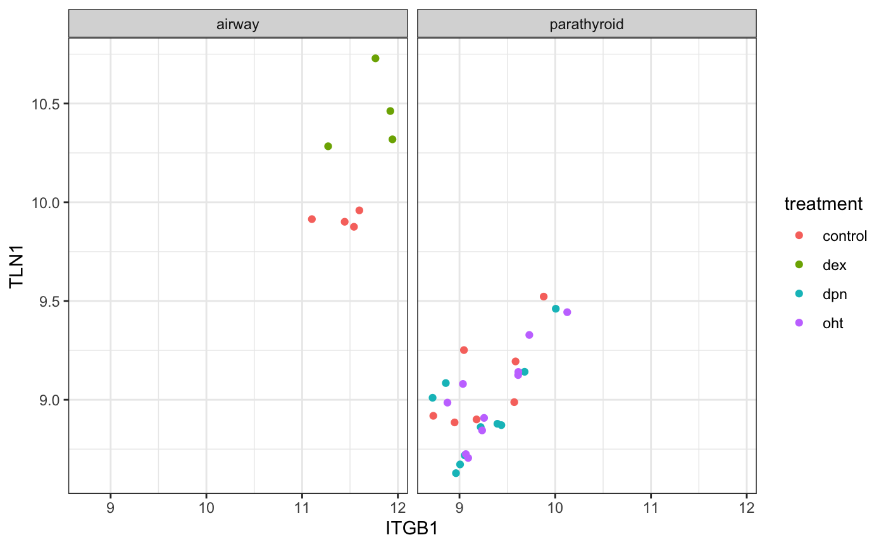
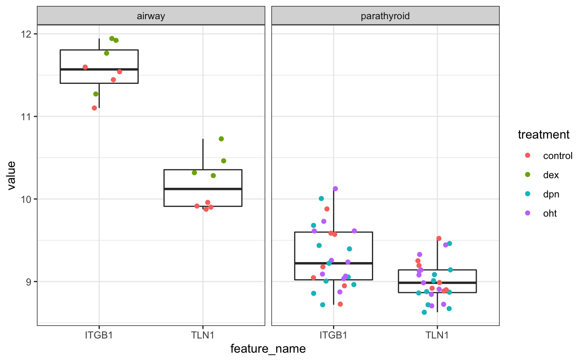

vignettes/FacileDataSet-assembly.Rmd
FacileDataSet-assembly.RmdThe FacileDataSet is a reference implementation of a multi-assay datastore that implements the FacileData API. It uses a SQLite database to store feature- and sample-level metadata, and an HDF5 file to store any number of assays over its samples. Both of these technologies allow quick and efficient access to arbitrary subsets of data stored on disk without having to load all of the data into RAM, making this datastore ideal for housing data like the entirety of the data from The Cancer Genome Atlas.
The FacileTcgaDataSet package outlines how to assemble the multiple assays from the TCGA (RNA-seq, miRNA-seq, CNV, etc.) into one FacileDataSet, and provides examples of how to access these data using the FacileData API.
We’ll be a bit less ambitious in this vignette, and only assemble two different RNA-seq datasets into one FacileDataSet. This won’t exercise our ability to query across different assays, but we will use this dataset for downstream examples here, and in vignettes in other facile packages.
We will use this vignette to assemble these data in a stepwise fashion, highlighting some best practices for doing so. These maneuvers will also be encapsulated in the assemble_example_dataset() in this package, for other resources to use, as well.
We will be working on a FacileBioc package that will provide the FacileData API directly over native Bioconductor assay containers. This will allow users to work with these objects directly with out explicitly converting them into a FacileDataSet first. Until then, follow the instructions here to convert data you already have into a FacileDataSet.
The easiest way to create a FacileDataSet is to pass a named list of well-groomed bioconductor assay containers, like a SummarizedExperiment or DGEList (or ExpressionSet) to the as.FacileDataSet function.
A FacileDataSet is stored on disk as a well-structured directory. You can look at the FacileDataSet Architecture section for the full details, but the important information to know is that:
SummarizedExperiment are stored in an HDF5 file.fData and pData, respectively) are stored in an SQLite database.pData/colData data.frames of each SummarizedExperiment are stored in an SQLite table in an entity-attribute-value-table (EAV) format in order to support covariates that are both common to all SummarizedExperiments and unique to others.meta.yaml file that stores important information about the dataset itself. Perhaps most important is the sample_covariates section that dictates how each covariate stored in the EAV table is decoded back into its native R-representation. More details are provided in the Entity-Attribute-Value Table section.Here we will use two already-assembled (but unrelated) RNA-seq datasets easily available within the bioconductor ecosystem for data assembly:
The airway dataset. This package provides a RangedSummarizedExperiment object of read counts in genes for an RNA-Seq experiment on four human airway smooth muscle cell lines treated with dexamethasone.
The parathyroidSE dataset. This package provides RangedSummarizedExperiment objects of read counts in genes and exonic parts for paired-end RNA-Seq data from experiments on primary cultures of parathyroid tumors.
If you are looking for help wrangling raw RNA-seq data into something like a SummarizedExperiment object, we currently favor processing the reads using either salmon or kallisto, then importing these results using the tximport package.
library(SummarizedExperiment)
# Note that you will need the airway and parathyroidSE packages installed.
# If you don't have those, install them like so:
#
# BiocManager::install(c("airway", "parathyroidSE"))
data("airway", package = "airway")
data("parathyroidGenesSE", package = "parathyroidSE")
# We load this after the Bioconductor stuff, because there are some facile
# generic functions that collide w/ Bioconductor ones. `samples` is defined
# in Biocbase, for instance.
library(FacileData)
library(dplyr)Keep in mind that we will be assembling these different datasets into one container that will combine the assay data from both experiments into one, as well as their gene- and sample- level metadata.
An often under-valued part of the high-througput experiments we tend to generate is how we document the phenotypic variables over our samples, ie. the things that populate the colData() of a SummarizedExperiment. This part is particularly important when assembling different datasets into one.
Put simply, we will want to ensure that where there is overlap in the “pnenotypic space” between different SummarizedExperiments, their variable (column) names are the same, and their encodings (values in the columns) are the same when they are talking about the same thing. We’ll call this process “harmonization”.
As an example, one batch of experiments might have a "sex" covariate, encoded with "male" and "female" entries. Another might encode "sex" using "m" and "f" values. Yet another might have labelled "sex" as "gender", and encoded the values as "MALE" and "FEMALE". When assembling these different experiment togheter, you want to ensure that the "sex" covariate is named the same across the colData() objects of the experiments you are assembling, and further that all of its entires are encoded uniformly as "male" and "female".
There is no requirement in this sample-data harmonization process to ensure that every experiment has the same covariates. Some experiments do not track the same phenotypic variables as others. This is fine: every SummarizedExperiment does not need the same elements in its colData(). We just want to ensure that when there is overlap, the column names and encodings match across datasets.
Another thing to consider when encoding covariate values is to ensure that they are, themselves, encoded as valid R variable names. For instance, suppose we have a time factor, with levels like "24h", and "48h", these should be re-encoded to something like "h24" and "h48". Here’s why: often times while you’re running different sorts of exploratory data analyses, through some sequence of "gather"-ing, "spread"-ing, and joining sample-level data, it is not uncommon for factor levels to end up as columns of a data.frame. Ensuring that the factor loevels are “proper R variable” names up front avoids problems you might run into when using non standard evaluation with whatever dplyr mojo, model.matrix(...), or whatever else these data often find themselves subject to.
Let’s take a look at the colData() from our two datasets, and see how we might harmonize them:
as.data.frame(colData(airway))## SampleName cell dex albut Run avgLength Experiment
## SRR1039508 GSM1275862 N61311 untrt untrt SRR1039508 126 SRX384345
## SRR1039509 GSM1275863 N61311 trt untrt SRR1039509 126 SRX384346
## SRR1039512 GSM1275866 N052611 untrt untrt SRR1039512 126 SRX384349
## SRR1039513 GSM1275867 N052611 trt untrt SRR1039513 87 SRX384350
## SRR1039516 GSM1275870 N080611 untrt untrt SRR1039516 120 SRX384353
## SRR1039517 GSM1275871 N080611 trt untrt SRR1039517 126 SRX384354
## SRR1039520 GSM1275874 N061011 untrt untrt SRR1039520 101 SRX384357
## SRR1039521 GSM1275875 N061011 trt untrt SRR1039521 98 SRX384358
## Sample BioSample
## SRR1039508 SRS508568 SAMN02422669
## SRR1039509 SRS508567 SAMN02422675
## SRR1039512 SRS508571 SAMN02422678
## SRR1039513 SRS508572 SAMN02422670
## SRR1039516 SRS508575 SAMN02422682
## SRR1039517 SRS508576 SAMN02422673
## SRR1039520 SRS508579 SAMN02422683
## SRR1039521 SRS508580 SAMN02422677as.data.frame(colData(parathyroidGenesSE))## run experiment patient treatment time submission study sample
## 1 SRR479052 SRX140503 1 Control 24h SRA051611 SRP012167 SRS308865
## 2 SRR479053 SRX140504 1 Control 48h SRA051611 SRP012167 SRS308866
## 3 SRR479054 SRX140505 1 DPN 24h SRA051611 SRP012167 SRS308867
## 4 SRR479055 SRX140506 1 DPN 48h SRA051611 SRP012167 SRS308868
## 5 SRR479056 SRX140507 1 OHT 24h SRA051611 SRP012167 SRS308869
## 6 SRR479057 SRX140508 1 OHT 48h SRA051611 SRP012167 SRS308870
## 7 SRR479058 SRX140509 2 Control 24h SRA051611 SRP012167 SRS308871
## 8 SRR479059 SRX140510 2 Control 48h SRA051611 SRP012167 SRS308872
## 9 SRR479060 SRX140511 2 DPN 24h SRA051611 SRP012167 SRS308873
## 10 SRR479061 SRX140511 2 DPN 24h SRA051611 SRP012167 SRS308873
## 11 SRR479062 SRX140512 2 DPN 48h SRA051611 SRP012167 SRS308874
## 12 SRR479063 SRX140513 2 OHT 24h SRA051611 SRP012167 SRS308875
## 13 SRR479064 SRX140513 2 OHT 24h SRA051611 SRP012167 SRS308875
## 14 SRR479065 SRX140514 2 OHT 48h SRA051611 SRP012167 SRS308876
## 15 SRR479066 SRX140515 3 Control 24h SRA051611 SRP012167 SRS308877
## 16 SRR479067 SRX140516 3 Control 48h SRA051611 SRP012167 SRS308878
## 17 SRR479068 SRX140517 3 DPN 24h SRA051611 SRP012167 SRS308879
## 18 SRR479069 SRX140518 3 DPN 48h SRA051611 SRP012167 SRS308880
## 19 SRR479070 SRX140519 3 OHT 24h SRA051611 SRP012167 SRS308881
## 20 SRR479071 SRX140520 3 OHT 48h SRA051611 SRP012167 SRS308882
## 21 SRR479072 SRX140521 4 Control 48h SRA051611 SRP012167 SRS308883
## 22 SRR479073 SRX140522 4 DPN 24h SRA051611 SRP012167 SRS308884
## 23 SRR479074 SRX140523 4 DPN 48h SRA051611 SRP012167 SRS308885
## 24 SRR479075 SRX140523 4 DPN 48h SRA051611 SRP012167 SRS308885
## 25 SRR479076 SRX140524 4 OHT 24h SRA051611 SRP012167 SRS308886
## 26 SRR479077 SRX140525 4 OHT 48h SRA051611 SRP012167 SRS308887
## 27 SRR479078 SRX140525 4 OHT 48h SRA051611 SRP012167 SRS308887Here are some things to consider:
There are only a subset of columns from the two experiments that tell us something about the characteristics of their samples, such as the “cell”, and “dex” columns of the airway dataset, and patient, treatment, and time, column of the parathyroid dataset. The “albut” column in the airway dataset is non-informative in this subset of the data, since it is always the same value, so we’ll drop that, too.
When combining these two experiments, we can probably consider the “dex” column in the airway dataset as a “treatment”, so we can combine them with the same column in the parathyroid dataset. Further, the encodings of the dex column might be transformed from “untrt” and “trt” to “control” and “dex”.
The “time” column in the parathyroid experiment should be translated into valid R variable names, so we’ll convert 24h to hrs24. The entries in the parathyroid “patient” column will also be munged in a similar fashion. We’ve found naming covariates of this type as “subject_id” covers many cases when working across different experiments, so we’ll rename it to that.
The airway dataset is from cell lines, and the parathyroid dataset is from people. We will introduce a “sample_type” covariate encoded with “cell_line” and “primary” values.
The rest of the colData() columns will be dropped from both experiments.
With these things in mind, let’s create new SummarizedExperiment objects, with harmonized colData().
airway
se.airway <- airway
colData(se.airway) <- local({
cd <- colData(airway) %>%
as.data.frame() %>%
transmute(
sample_type = "cell_line",
cell_line = cell,
treatment = ifelse(dex == "untrt", "control", "dex")) %>%
DataFrame()
rownames(cd) <- colnames(se.airway)
cd
})parathyroid
se.parathyroid <- parathyroidGenesSE
colData(se.parathyroid) <- local({
cd <- colData(parathyroidGenesSE) %>%
as.data.frame() %>%
transmute(
sample_type = "primary",
subject_id = paste0("patient_", patient),
treatment = tolower(as.character(treatment)),
time = paste0("hrs", sub("h$", "", time))) %>%
DataFrame()
rownames(cd) <- colnames(se.parathyroid)
cd
})When you are assembling assay data together across different experiments, you need to decide which assays are the same, and which are different. For instance, if you have a series of experiments with paired-end RNA-seq data, and another set of experiments with single-end RNA-seq data: these aren’t the same assays, are they? … or?
You might decide to assemble these data together using two different assay types, one named "gene_count_PE" and the other "gene_count_SE". There will be a disjoint set of samples that have assay data from one or the other. You then might decide to make a third assay type, "gene_count_norm" which somehow normalizes these data together and make that available for exploratory analysis.
In this example, for the sake of simplicity we will assume that the airway and parathyroid experiments were run on the same assay, and load them up together. This also means that they must share the same feature space for the assay, and we need to ensure that the rownames() of the two objects are equal.
Neither dataset provides gene information for its rows aside from the Ensembl identifiers. Because these were both quantitated against v75 (ish) of Ensembl’s gene annotations, we’ll iuse the biomaRt package to retrieve the information from the assembly close to that (biomaRt::listEnsemblArchives() points us to the URL we should query).
bm <- loadNamespace("biomaRt")
mart <- bm$useMart(
host = "feb2014.archive.ensembl.org",
biomart = "ENSEMBL_MART_ENSEMBL",
dataset = "hsapiens_gene_ensembl")
mart.info <- bm$getBM(
attributes = c("ensembl_gene_id", "hgnc_symbol", "gene_biotype"),
filters = "ensembl_gene_id",
values = rownames(se),
mart = mart)The query above retrieves the data we need, but it can take a long time to run. To save time while compiling this vignette, we have serialized the result of the query, and will use that here.
mart.info <- local({
fn <- system.file("extdata", "ensembl-v75-gene-info.csv.gz",
package = "FacileData")
read.csv(gzfile(fn, "rt"), stringsAsFactors = FALSE)
})The column names of the gene.info table need to be tweaked, and we will only keep the rows (genes) that are shared between our two datasets.
This mismatched gene matching wouldn’t be an issue if these data were from the same assay and processed in the same way. When you are assembling assay data into single assay of a FacileDataSet, the implicit assumption is that all of the data were processed in the same way.
shared.ids <- intersect(rownames(se.airway), rownames(se.parathyroid))
gene.info <- mart.info %>%
transmute(feature_id = ensembl_gene_id,
feature_type = "ensgid",
name = hgnc_symbol,
meta = gene_biotype,
source = "Ensembl_v75") %>%
filter(feature_id %in% shared.ids) %>%
distinct(feature_id, .keep_all = TRUE) %>%
DataFrame()
rownames(gene.info) <- gene.info[["feature_id"]]Now we can cleanup the rowdata of our SummarizedExperiment and make them row-wise concordant.
Like we’ve been saying all along … all you need is a named list of well-curated bioconductor experiments, and here we are!
We initialize a new FacileDataSet with our list of SummarizedExperiments (you can even just have one SummarizedExperiment), and specify which assay you are dropping in first.
se.all <- list(airway = se.airway, parathyroid = se.parathyroid)
xfds <- as.FacileDataSet(
se.all,
path = tempfile(),
dataset_name = "ExampleRnaFacileDataSet",
assay_name = "gene_counts",
assay_description = "Gene counts from their respective Bioconductor packages",
assay_type = "rnaseq",
organism = "Homo sapiens")Let’s look at how the correlation of TLN1 and ITGB1 change across datasets
library(ggplot2)
theme_set(theme_bw())
dat <- samples(xfds) %>%
with_assay_data(c("ENSG00000137076", "ENSG00000150093")) %>%
with_sample_covariates("treatment")
ggplot(dat, aes(ITGB1, TLN1)) +
geom_point(aes(color = treatment)) +
facet_wrap(~ dataset)
bdat <- samples(xfds) %>%
fetch_assay_data(c("ENSG00000137076", "ENSG00000150093"),
normalized = TRUE) %>%
with_sample_covariates("treatment")
ggplot(bdat, aes(x = feature_name, y =value)) +
geom_boxplot(outlier.shape = NA) +
geom_jitter(aes(color = treatment), width = 0.2) +
facet_wrap(~ dataset)